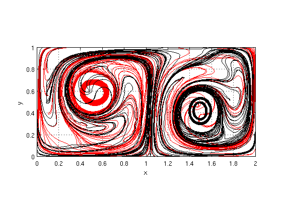
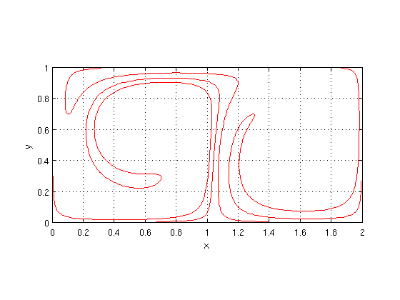
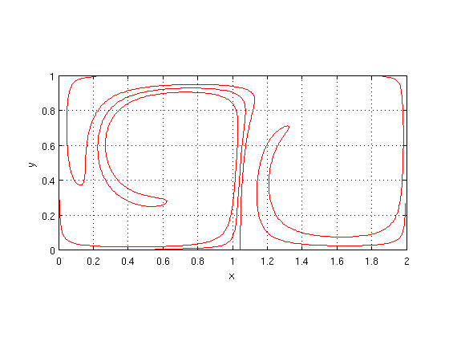

Lagrangian Coherent Structures Toolbox User Guide
Contents
Introduction
The LCS toolbox is demonstrated by analyzing a double gyre flow:
![$\dot x = -\pi A \sin[-\pi f(x,t)] \cos(\pi y)$](lcs_user_guide_eq46362.png)
![$\dot y = \pi A \cos[\pi f(x,t)] \sin(\pi y) \frac{\partial f(x,t)}{\partial x}$](lcs_user_guide_eq89183.png)
where
![$f(x,t) = \epsilon \sin(\omega t)x^2 + [1 - 2 \epsilon \sin(\omega t)] x$](lcs_user_guide_eq34228.png)
and  ,
,  and
and  are constants. Further details are availaibe in DOI:10.1016/j.physd.2005.10.007, DOI:10.5194/npg-7-59-2000, and DOI:10.5194/npg-4-223-1997.
are constants. Further details are availaibe in DOI:10.1016/j.physd.2005.10.007, DOI:10.5194/npg-7-59-2000, and DOI:10.5194/npg-4-223-1997.
Toolbox Initialization
Before starting to use the toolbox, the following initialization functions should be executed
matlabpool('open') pctRunOnAll javaaddpath('ParforProgress2')
Warning: Found 1 pre-existing communicating job(s) created by matlabpool that are running. You can use 'matlabpool close force local' to remove all jobs created by matlabpool. Starting matlabpool using the 'local' profile ... connected to 8 workers.
Flow definition
The flow vector field is defined as a symbolic function. The definition for the double gyre is:
t = sym('t'); x = sym('x'); y = sym('y'); p = struct('epsilon',.1,'a',.1,'omega',pi/5); forcing = p.epsilon*sin(p.omega*t)*x^2 + (1 - 2*p.epsilon... *sin(p.omega*t))*x; flow.symDerivative(1) = -pi*p.a*sin(pi*forcing)*cos(pi*y); flow.symDerivative(2) = pi*p.a*cos(pi*forcing).*sin(pi*y)... *(2*p.epsilon*sin(p.omega*t)*x + 1 - 2*p.epsilon*sin(p.omega*t));
The flow domain, timespan and resolution must be defined also:
flow = set_flow_domain([0 2; 0 1],flow); flow = set_flow_timespan([0 20],flow); flow = set_flow_resolution([2 1]*10,flow);
Flow animation
To verify that the flow has been correctly defined, it can be animated:
flow = animate_flow(flow);
>> execution time was 1.87s.

Parameters can be changed and the animation re-run. For example
flow = set_flow_timespan([0 30],flow); flow = set_flow_resolution([2 1]*20,flow); flow = animate_flow(flow);
>> execution time was 1.95s.

Hyperbolic barriers
Hyperbolic barriers are obtained from strainlines. Strainlines are computed based on a resolution representing a grid of initial conditions:
strainline = set_strainline_resolution(uint64([2 1]*5));
A maximum length for strainlines must be specified. Strainlines are integrated until reaching the boundary. Nonetheless, a maximum length needs to be specified to bound integration time. This maximum length is found heuristically.
strainline = set_strainline_max_length(5,strainline);
The following parameters are used to filter LCSs from all calculated strainlines. To start, these parameters are set to display all strainlines.
strainline = set_strainline_geodesic_deviation_tol(inf,strainline); strainline = set_strainline_length_tol(0,strainline); strainline = set_strainline_filtering_method('superminimize',strainline); filteringParameters.distance = 0; filteringParameters.resolution = [1 1]; strainline = set_strainline_filtering_parameters(filteringParameters,... strainline);
This specifies everything necessary. The function strain_lcs_script is calculates and plots all strainlines:
doubleGyre = struct('flow',flow,'strainline',strainline); doubleGyre = strain_lcs_script(doubleGyre);
Warning: flow.cgStrainMethod.name not set; using default: equationOfVariation Warning: odeSolver not set; using default: ode45 >> execution time was 9.92s. >> execution time was 0.13s. cgStrain_stats: lambda_1*lambda2: min = 0.947155 max = 1.33724 mean = 0.998159 median = 0.998235 1 - max(lambda_1) = 0.0144087 mean(abs(detCgStrain-1)) = 0.005879 >> execution time was 1.9s. >> execution time was 0.21s. Warning: 10 NaN points. Total number of points: 6284 Geodesic deviation statistics: minimum = 2.33666e-16 maximum = 3513.79 mean = 4.24 median = 3.74661e-07 Number of strainline segments: 50 >> execution time was 0.09s. >> execution time was 1.1s. Number of filtered segments: 24

The plot produced shows strainlines that meet filtering criteria. To see all the strainlines, execute:
set(findobj(gca,'tag','strainline'),'visible','on')

To get a list of all graphics objects whose visibility can be controlled, type:
unique(get(get(gca,'children'),'tag'))
ans =
'geodesicDeviationPoint'
'quiver'
'strainline'
'strainlineFiltered'
'strainlineInitialCondition'
'strainlineSegment'
'superminimizationLine'
The strainlines appear quite jagged. To fix this, the flow resolution needs to be increased:
doubleGyre.flow = set_flow_resolution([2 1]*100,doubleGyre.flow); doubleGyre.strainline = reset_strainline(doubleGyre.strainline); doubleGyre = strain_lcs_script(doubleGyre); set(findobj(gca,'tag','strainline'),'visible','on')
Warning: odeSolver not set; using default: ode45 >> execution time was 238.79s. >> execution time was 1.45s. Warning: Nonpositive eigenvalues cgStrain_stats: lambda_1*lambda2: min = -1.65408 max = 2987.87 mean = 1.14725 median = 0.998038 1 - max(lambda_1) = 0.0144087 mean(abs(detCgStrain-1)) = 0.143466 >> execution time was 1.86s. >> execution time was 0.19s. Warning: 4 NaN points. Total number of points: 6485 Geodesic deviation statistics: minimum = 1.69129e-18 maximum = 493.666 mean = 0.367295 median = 3.15909e-07 Number of strainline segments: 50 >> execution time was 0.05s. >> execution time was 0.42s. Number of filtered segments: 27

Furthermore, the strainline integration error tolerance should be decreased:
doubleGyre.strainline = set_strainline_ode_solver_options(... odeset('relTol',1e-6),doubleGyre.strainline); doubleGyre = strain_lcs_script(doubleGyre); set(findobj(gca,'tag','strainline'),'visible','on')
>> execution time was 11.07s. >> execution time was 0.38s. Geodesic deviation statistics: minimum = 2.54762e-19 maximum = 498.762 mean = 0.728199 median = 6.01932e-06 Number of strainline segments: 50 >> execution time was 0.05s. >> execution time was 2.2s. Number of filtered segments: 20
Now that the strainlines have a good appearance, filtering parameters are adjusted to find significant hyperbolic barriers
doubleGyre.strainline = set_strainline_filtering_parameters(... struct('distance',1.5,'resolution',[1 1]),doubleGyre.strainline); doubleGyre = strain_lcs_script(doubleGyre);
>> execution time was 2.21s. Number of filtered segments: 3
The double gyre is analyzed in DOI:10.1063/1.3690153. To produce a figure similar to Figure 10, set the timespan to match and increase the strainline resolution:
doubleGyre.flow = set_flow_timespan([0 20],doubleGyre.flow); doubleGyre.strainline = set_strainline_resolution([2 1]*10,doubleGyre.strainline); doubleGyre = strain_lcs_script(doubleGyre);
Warning: odeSolver not set; using default: ode45 >> execution time was 176.32s. >> execution time was 1.61s. cgStrain_stats: lambda_1*lambda2: min = 0.841943 max = 51.6043 mean = 1.00072 median = 0.99837 1 - max(lambda_1) = 0.00645916 mean(abs(detCgStrain-1)) = 0.00889075 >> execution time was 42.4s. >> execution time was 1.34s. Warning: 31 NaN points. Total number of points: 203032 Geodesic deviation statistics: minimum = 5.46404e-19 maximum = 635.669 mean = 0.760998 median = 0.0106662 Number of strainline segments: 200 >> execution time was 0.1s. >> execution time was 8.97s. Number of filtered segments: 3